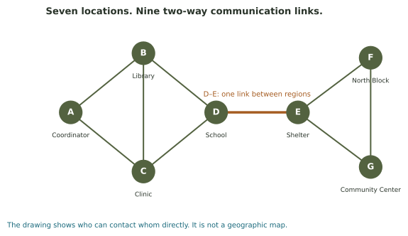

Build confidence with direct neighbors, paths, connection tables, failures, and two spreading rules. The same seven locations connect every investigation.
Seven guided investigationsIndividual feedbackAutosave & named printout
Getting started
Explore the same seven-location network by counting neighbors, tracing paths, changing links, and following two spreading rules.
Use the original seven-node network unless the question explicitly changes it.
Links are two-way and equally counted. A path length counts edges.
Round 0 is the starting state. All updates use the same previous snapshot.
Fractions such as 9/21 are accepted in numerical fields.
Check each section as you work. Answers save automatically.

Base network for the lab: AB, AC, BC, BD, CD, DE, EF, EG, FG. If you change the explorer, return to this structure when answering questions about the base network.
0 sections checked
Part 1 / Count and compare
Degree, the handshake rule, and density
Part 2 / Trace the route
Shortest paths count edges, not names
Part 3 / Read a connection table
A 1 means a direct link
Use the adjacency table in the reading to decide which locations have direct links.
Part 4 / Interpret importance
The same degree can hide different roles
B, C, D, and E each have degree 3. To compare their roles, ask what happens to routes between the left region {A,B,C,D} and right region {E,F,G}.
Part 5 / Test the failure
Which change supplies another way across?
A bridge is a link whose removal separates a connected network. Remove D–E from the base network and examine the remaining paths.
Part 6 / Keep track of time
Count new arrivals separately from the total
Use the original network. Only A is informed at round 0. Every informed location sends to all neighbors, using one link per round. A newly informed location waits until the next round to relay. Once informed, it stays informed.
Part 7 / Change the update rule
At least half is a precise requirement
Now use adoption rather than automatic message forwarding. A node becomes active in the next round when at least half its neighbors are already active. Active nodes remain active, and all decisions use the previous snapshot.
For location E, decide how many neighbors must be active to meet the adoption threshold.
Final reflection · The model and the world
Choose a network from your life: transit, friends, organizations, a supply chain, an ecosystem, or another setting. State what a node represents and exactly what an edge means. Name one question the model could answer and one important feature it omits.
Review your paths and explanations before printing.